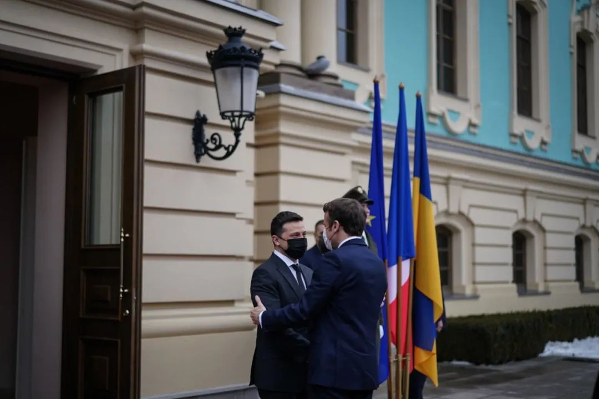

收录于合集
以下文章来源于欧亚系统科学研究会 ，作者述垚&粒民
 欧亚系统科学研究会 .
欧亚系统科学研究会 .
让系统增值，为创新添砖
▲ 2022 年 1 月，在乌克兰基辅，民众举着旗帜和标语牌，感谢欧盟和北约国家对乌克兰的军事支持。图源： ECFR
导 读
新年伊始，乌东地区却战云密布。2021年俄乌关系加速恶化、双方各自陈兵边境并展开军。俄罗斯要求得到“北约不东扩”的承诺，但这种要求被视为对冷战后的“欧洲安全秩序”的挑战。乌克兰危机是冷战后欧洲和平体系结构性失衡的产物，尽管俄罗斯和乌克兰都不希望陷入战争，但是目前为止外交斡旋和调解作用有限。现在的问题是：对于这场马上可能发生在“家门口”的战争，欧洲人做好准备了吗？
乌克兰倘若发生战争，将成为欧洲安全的分水岭。欧洲对外关系委员会于一月底展开了一项大规模民调，调查欧盟民众对可能来临的战争看法如何。虽然欧洲各国政府的分歧是老生常谈，但这次欧洲公民在以下三方面达成惊人一致：首先，他们认为俄罗斯可能会再次“入侵”乌克兰。其次，他们认为这不仅事关乌克兰，也事关整个欧洲安全的问题。第三，他们希望欧洲对危机做出反应，大多数人支持北约和欧盟采取措施。不过，对于“保卫乌克兰”所要付出的代价，大家却意见不一。比起法德，罗马尼亚和瑞典的人民更愿意做出牺牲。
作者指出，这场危机可能会考验欧洲人捍卫欧洲安全秩序的意愿。可以预料，欧洲领导人将不会放弃外交斡旋的努力。但当冲突不可避免，欧盟有多大的决心承担军事和经济代价？欧亚系统科学研究会特编译本文，供读者参考。文章原刊于欧洲对外关系委员会网站，仅代表作者本人观点。
俄乌危机或将极大改变欧洲人对其自身安全的看法。俄罗斯会再次“入侵”乌克兰吗？若果真如此，欧洲人又将作何反应？这是大家普遍关注的问题。
在有关这场危机的诸多公开辩论中，欧洲各国政府普遍呈现出分裂、软弱或缺席的状态。然而，2022年1月下旬欧洲外交关系委员会（European Council on Foreign Relations，简称ECFR）组织的一项泛欧民意调查显示， 欧洲各国选民对这场危机有着惊人的共识。 从塞纳河畔到喀尔巴阡山，从亚平宁半岛至波罗的海沿岸，多数欧洲民众都认为俄罗斯很可能会在2022年“入侵”乌克兰，而欧洲各国有责任保卫乌克兰，在他们看来这是欧洲面临的整体性问题。
该调查基本覆盖了芬兰、法国、德国、意大利、波兰、罗马尼亚和瑞典七国，其人口之和约占欧盟总人口近三分之二。它的结果表明，俄罗斯总统弗拉基米尔·普京成功将欧洲安全与秩序问题正式摆上了桌面。出乎不少人——其中可能也包括普京自己——意料的是，这在地缘政治的意义上促进了欧洲人的觉醒。 该调查结果包括四个基本要点：欧洲战争不再是不可想象的；应当对俄罗斯的“入侵”做出回应；欧洲人对俄乌冲突的最大担忧因国而异；欧洲各国政府需为各类突发事件做好计划，以减轻普通公民负担。
**
**
01
** 欧洲战争不再不可想象**
新冠疫情爆发时，一些欧洲国家将抗疫行动也视为一场战争。而现在，对现实战争的恐惧正在席卷整个欧洲。 欧洲人曾认为欧洲战争是不可想象的，并将和平视为理所当然，这种陈词滥调如今已难以令人信服。 正如ECFR的新民意调查所显示的，他们认为自己的世界正处于战前而非战后状态。在除芬兰以外的所有被调查国家当中，大多数受访者都认为俄罗斯很可能会于2022年再次“入侵”乌克兰。
与2014年不同的是，如今在许多欧洲人眼中，乌克兰冲突显然已变为一场欧洲危机。在波兰，有73%的受访者认为“入侵”发生的可能性很大。这一数字在罗马尼亚为64%，瑞典为55%，德国为52%，法国和意大利为51%，芬兰是44%。如此来看似乎保持中立或能消除对潜在军事冲突的恐惧。
▲ 俄罗斯今年“入侵”乌克兰的可能性有多大？ （深红：很有可能、浅红：有可能、灰色：不知道、浅蓝：不太可能、深蓝：不可能） 结果显示，波兰人对此种前景最为忧虑和悲观。
出于历史与地理原因，波兰受访者将俄罗斯的“入侵”视为自身生存危机的前兆。几乎所有年龄段的波兰人都需考虑俄乌冲突进一步升级的可能。而在其他接受调查的国家，不同年龄段民众之间存在有趣的代沟。 在法国和瑞典，与年轻人相比，60岁以上的人更倾向于认为“入侵”发生的可能性很大。与之不同的是，在罗马尼亚、意大利、德国和芬兰，最担忧“入侵”发生的是最年轻一代，即那些冷战结束后出生的人。
▲ 在不同年龄段的人看来，俄罗斯今年入侵乌克兰的可能性有多大？ （浅红：18-29岁年龄段认为有可能的比例、深红：60岁以上年龄段认为有可能的比例） 结果显示，冷战后出生的年轻一代对战争前景更为担忧。
普京成功吸引了欧洲的注意力，但这是有代价的。 正如ECFR的新调查所表明的，超过一半的欧洲人认为，俄罗斯于乌克兰问题上的处置态度，在多个领域都对欧洲整体安全构成了威胁。
▲ 俄罗斯在乌克兰问题上的立场，对欧洲的这些领域构成了多大威胁？
（深红：很大威胁、红色：较大威胁、灰色：不知道、浅蓝：较小威胁、深蓝：没有威胁）
七国受访者中，认为俄乌冲突将在能源安全方面对欧洲构成威胁的比例最高，在军事冲突、网络战争、经济与移民问题上的聚焦程度依次降低。 **** **
**
02
** 谁来“保卫”乌克兰？**
ECFR在去年年底进行的一项民意调查显示，直到最近，在大多数欧洲人心中，未来发生的任何“冷战”都将是美国与俄罗斯或中国之间的对抗，欧洲则将成为这场冲突的旁观者而非参与者。事实上，当俄罗斯大军陈兵乌克兰边境时，许多媒体都在猜测，欧洲人不会真正关心这场危机。
不过ECFR的最新调查却显示，这种假设或许是错误的。确实，尽管不少欧洲人认为乌克兰是个混乱的大国而非精悍的小国，他们中的大多数依然支持保卫乌克兰。 问题是：当危机真的袭来，那个最终挺身而出的会是谁？
▲ 如果俄罗斯“入侵”乌克兰，应由谁来出手相助？ 选项依次为：北约、欧盟、美国、德国、法国、英国以及受访者本国； 法、德两国受访者在回答时除“本国”外，并无“法国”和“德国”两个选项（ 蓝色：应该出手、灰色：不知道、红色：不该出手）。 结果表明，更多人支持北约出手。
在几乎所有接受调查的国家当中，大多数受访者都认为北约是最适合保卫乌克兰的组织。 值得注意的是，波兰是个例外。在波兰，更多人认为应由欧盟来承担这一角色。
▲ 如果俄罗斯“入侵”乌克兰，应由谁来出手相助？ （粉红：受访者本国、蓝色：欧盟、黄色：北约） 法、德两 七国受访者都认为由“本国”来“保卫”乌克兰的必要性远低于北约和欧盟，其中芬兰尤甚。
俄罗斯“入侵”带来的威胁或使再造冷战时代的西方世界，这一点不难想象。 但有趣的是，它也挑战了一个普遍存在的看法：在安全方面，东欧人准备抛弃欧盟而将美国视为其唯一可靠的伙伴。 事实上，在除德国以外的所有被调查国家中，大多数人都认为北约和欧盟都应该对俄罗斯的入侵做出回应。
确实，当俄罗斯再度“入侵”乌克兰的威胁到来之时，欧洲人在自身利益保护者的选择上仍然存在分歧。波兰、德国、罗马尼亚和意大利的受访者最信任北约，而法国、瑞典和芬兰的受访者则更信任欧盟。瑞典和芬兰都不是北约成员国，正如ECFR调查所显示的，两国民众都未就是否加入北约达成共识。在瑞典，30%的受访者拒绝瑞典加入北约，而33%的受访者表示支持；在芬兰，这一数字分别为35%和25%。
但是，在信任北约和信任欧盟的人之间，欧盟并未如许多人所想那样存在巨大裂痕。 如果俄罗斯入侵乌克兰，超过60%的波兰人、罗马尼亚人和意大利人相信欧盟会保护欧盟公民的利益。同样，大多数瑞典人和芬兰人在这方面信任北约，而不仅仅是欧盟。
与此同时，法国和德国的受访者对欧盟保护其公民的能力最不信任。
▲ 当俄罗斯“入侵”乌克兰时，你对欧盟与北约保护欧盟公民利益的信心有多大？ （蓝色：欧盟、黄色：北约） 结果显示， 瑞典、芬兰和法国对欧盟的信心高于北约，而法国和德国对欧盟的信心在七国中最低。
虽然大多数欧洲人认为应该保卫乌克兰，但他们彼此间在如何做到这一点上存在重大分歧。虽然65%的波兰人认为波兰应该为乌克兰发声辩护，但芬兰、意大利和德国的受访者普遍认为他们自己的国家不应该这样做。
▲ 如果俄罗斯“入侵”乌克兰，我的祖国应出手相助吗？ （蓝色：应该、灰色：不知道、红色：不应该） 结果显示， 除波兰外，在其余六个国家当中，认为“本国”有义务出手援助乌克兰的受访者比例都没有过半数。
不过即便是在波兰，更多的受访者依然认为乌克兰的主要捍卫者应当是欧盟（80%）和北约（79%），而非他们自己的国家。这或许表明，对大多数欧洲人来说，保卫乌克兰意味着保卫冷战后的欧洲安全秩序，而不是简单地在俄乌冲突中选边站。因此，他们希望北约和欧盟都能够采取行动。
民意调查还表明，虽然大多数欧洲人仍相信北约可以保卫欧洲，但“北约”于此不再是“美国”的别称。他们更愿意相信北约会保护他们的利益，而非相信美国。正如一些作者在此前的ECFR文章中所观察到的，这可能反映了一个事实，即欧洲人日渐将美国仅仅视为一个兼职的欧洲大国（a part-time European power）。在除波兰和罗马尼亚外的所有被调查国家中，为数更多的受访者认为，如果俄罗斯再次“入侵”乌克兰，德国在保护欧盟公民利益方面比美国更有能力。
ECFR的调查也证明，英国“脱欧”真的意味着“脱欧”。尽管伦敦曾多次表达了与基辅的团结，但欧洲任何地方的公民可能都很少看到英国在这件事上发挥了什么作用。只有在波兰（66%）和瑞典（52%），过半数受访者认为英国应该为乌克兰发声辩护。
在被调查国家内部，民众彼此间的政治差异可能比国家间差异要更为显着。
在德国，与刻板印象相反，最愿意捍卫乌克兰的是政府中的中左翼政党而非基督教民主联盟（CDU）的支持者。目前大多数绿党支持者和社会民主党的多数选民都希望德国保卫乌克兰。在投票给基民盟的人中，不希望德国保卫乌克兰的受访者比希望它这样做的人数略多。
在法国，总统埃马纽埃尔·马克龙和他的中右翼挑战者瓦莱丽·佩克雷斯的支持者希望法国保卫乌克兰。与德国不同，大多数投票给最大的极右翼政党的法国人则不希望他们的国家这样做。民族主义领导人玛丽娜·勒庞和埃里克·泽穆尔的不少支持者便是如此。

▲ 2月8日，法国总统马克龙在推特表示法德将携手促进乌克兰危机化解。图源：twitter
意大利所有主要政党的支持者中也存在分歧，尽管人们普遍认为意大利是最同情俄罗斯的欧盟成员国之一。投票给民主党的人是最渴望看到自己的国家为乌克兰辩护的人（55%），但该党的支持者中有40%持相反意见。同样，在投票给极右翼的意大利兄弟会的人中，有 54%的人表示他们的国家不应该保卫乌克兰，而37%的人表示应该这么做。有趣的是，马泰奥·萨尔维尼极右翼联盟的支持者在这个问题上也存在同样的分歧。
在波兰，各政治派系的绝大多数支持者都希望波兰保卫乌克兰。然而，当被问及在俄罗斯“入侵”乌克兰时应由谁来保护欧盟公民的利益，目前执政的法律与公正党的支持者是唯一一个大多数人都相信波兰政府会这样做的群体，这反映了该国政治的两极分化。
03
** 欧洲做好牺牲的准备了吗？**
“牢记克里姆林宫上次对你做了什么。”这句话最能概括欧洲人对西方和俄罗斯之间爆发冲突的恐惧。同样，俄罗斯可能再次入侵乌克兰也是他们最大的安全隐忧。
波兰的受访者最担心的不仅是俄罗斯会对他们自己国家采取军事行动，而且同样担心冲突可能会导致乌克兰民众以怎样的方式逃离乌克兰，波兰和白俄罗斯边境的移民危机进一步加剧了这种担忧。德国人、芬兰人、罗马尼亚人和意大利人主要担心俄罗斯会切断他们的能源供应（对于罗马尼亚人来说，同样重要的威胁是经济衰退，在一定程度上反映了该国历来不稳定的经济形势。）与此同时，法国和瑞典人最担心的是网络攻击，这种担忧可能来自于近期莫斯科试图干预他们国内选举的行为。
虽然各国在这些关键问题上存在一些差异。但总体而言，欧洲人认为能源依赖是他们在与俄罗斯打交道时共同面临的重要挑战：除瑞典（仅有47%）外，其他国家的大多数受访者都认为如此。
▲ 欧洲人将为保卫乌克兰付出什么代价？ （紫色：移民、浅紫：能源依赖、深蓝：网络战、蓝色：军事行动、浅蓝：经济） 该图表显示了选择“非常大的威胁”和“相当大的威胁”两个选项的受访者比例。
欧洲人现在知道在欧洲发生战争是可能的，但他们为这种战争做好准备了吗？今天，地缘政治实力不仅取决于军事和经济实力，还取决于承受痛苦的能力。 与冷战时期不同，对手不是铁幕后的人，而是你的天然气进口方和高科技产品出口方。这使他们不仅可能对欧盟的价值观和信息持开放态度，而且还容易受到欧洲经济压力的影响。虽然这些联系是提高欧洲软实力的途径，但同时也是对欧盟韧性的一种考验。
西方阻止俄罗斯再次入侵乌克兰的策略是让这种入侵对俄罗斯人来说成本更高。 具体的手段包括来自东欧的军事威慑、旨在提高乌克兰军事力量的武器运输，以及计划在各个领域实施一系列制裁等。 任何以制裁为中心的战略能否成功，都取决于欧洲人是否愿意牺牲经济利益。
▲ 保卫乌克兰的哪些政治代价值得付出？ （选项依次为：接收乌克兰难民、更高的能源价格、网络攻击、经济下滑、俄罗斯军事威胁。红色：不值得、蓝色：值得） 七国受访者最不愿意承担的是经济下滑和俄罗斯军事威胁的风险。
然而，调查结果显示，仅在波兰、瑞典和罗马尼亚这三个国家，表明愿意承担因保卫乌克兰而产生的所有主要代价（包括俄罗斯军事行动的威胁）的受访者数量超过不愿意承担的受访者数量。 令人担忧的是，法国和德国公民最不愿意付出这些代价，他们认为这样做的风险大于收益。
▲ 援助乌克兰的哪些后果值得承受？ 数值表明选择“绝对值得冒险”和“可能值得冒险”的受访者占比与选择“绝对不值得冒险”和“可能不值得冒险”的受访者占比之间的差值。红色表示认为不值得冒险的受访者占比大于值得冒险的受访者占比；蓝色则表示相反。
只有在波兰，大多数受访者表示愿意接受因保卫乌克兰而造成的经济衰退、能源价格上涨、网络攻击和难民危机。在德国、法国、意大利和芬兰，大多数受访者认为如果保卫乌克兰做会带来经济衰退的风险，那么这样做是不值得的。他们似乎主要支持仅会伤害俄罗斯而不会伤害自身的制裁。
▲ 保卫乌克兰而招致俄罗斯军事行动的风险值得承受吗？ （红色：不值得、蓝色：值得）
**▲ **保卫乌克兰而导致经济下滑的风险值得承受吗？ （红色：不值得、蓝色：值得）
此外，调查数据表明， 在东欧和西欧的欧盟成员国中，最老一代和最年轻一代存在代沟，他们对这一问题的看法存在有趣的差异。
芬兰的调查结果似乎强化了对“雪花一代”（注：generation snowflake，相对于上一辈人韧性更差、更容易觉得被冒犯的新生代）的刻板印象。尽管年轻的芬兰人相对可能认为战争确实迫在眉睫，但与 60 岁以上的人相比，如果这可能会导致经济衰退、能源价格上涨、难民危机、网络攻击及俄罗斯的军事行动，那么他们不太愿意采取保卫乌克兰的行动。
类似的结果在波兰的调查中也表现得很明显。尽管波兰老年人和年轻人（73%）同样认为俄罗斯对乌克兰采取军事行动的威胁是真实存在的，但老一代更倾向于认为冒上述所有风险去保卫乌克兰是值得的。
然而，在其他接受调查的国家中，尤其是法国和德国，代际差异表现得非常不同——在所有领域，年轻人都比老年人更愿意做出上述牺牲。令人惊讶的是，在法国，年轻的受访者比年长的受访者更愿意承担因保卫乌克兰而导致俄罗斯采取军事行动的风险。
04
** 结 论**
如果普京威胁乌克兰的目的是为了迫使欧洲人重估欧洲安全秩序，那么他已经成功了。但是，从 ECFR 最新民意调查结果来看，普京可能会对大多数欧洲人似乎已经做好保卫乌克兰的准备这一事实而感到惊讶。
本文对调查结果的解释是， 欧洲人会认为俄罗斯再次“入侵”乌克兰不仅是对邻国的攻击，也是对欧洲安全秩序本身的攻击。 令人惊讶的是，从南到北、从东到西，众多受访者都认为应当捍卫这一欧洲安全秩序。
普京可能不会感到意外的是，虽然欧洲人准备好支持乌克兰，但他们不太乐意承担因威慑俄罗斯而带来的财政成本。
接下来的几周将考验欧洲人是否能够从一个由软实力塑造的世界过渡到一个由韧性（resilience）塑造的世界。他们如何应对这一考验将对欧洲安全的未来至关重要。
- 文章转自欧洲对外关系委员会。文中民调数据资料来源：Datapraxis、AnalitiQs和Dynata，2022年1月。
文章观点不代表本平台观点，本平台评译分享的文章均出于专业学习之用, 不以任何盈利为目的，内容主要呈现对原文的介绍，原文内容请通过各高校购买的数据库自行下载。